Qualia Digital Archive
Creative Documentation & Media Strategy
A curated visual archive of studio practice, exhibition space, community activation, and design systems — documented with intention at Qualia Contemporary Art.
The Studio & The Artist
Capturing the raw creative process through intimate workspace documentation.
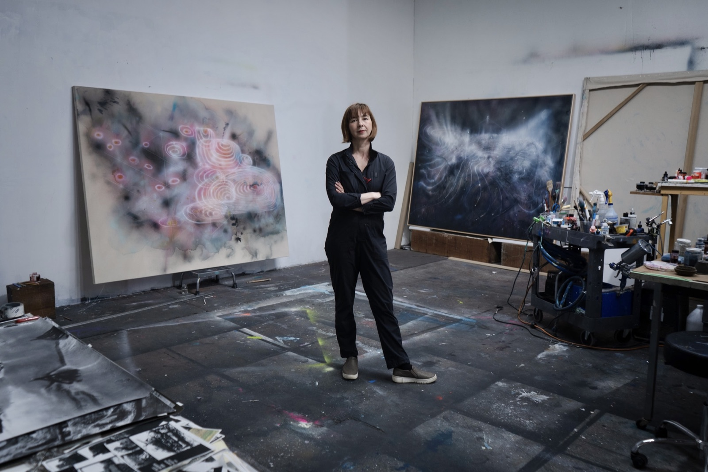
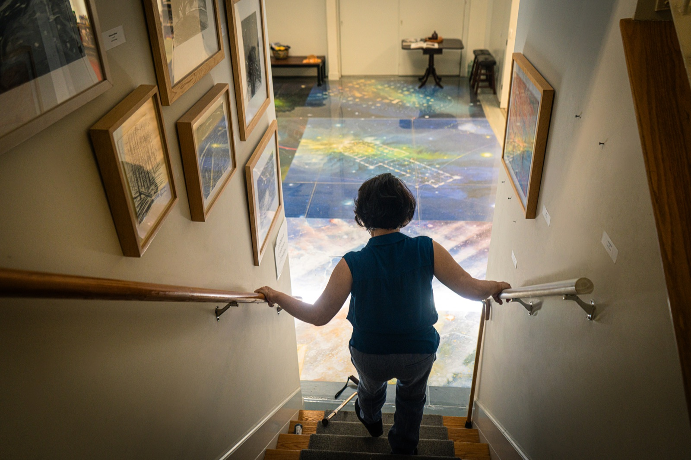
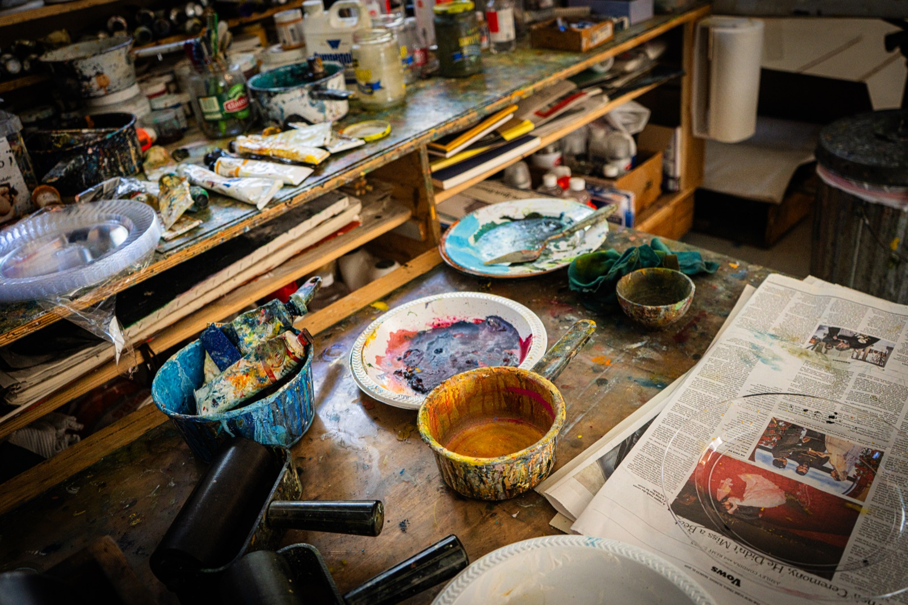
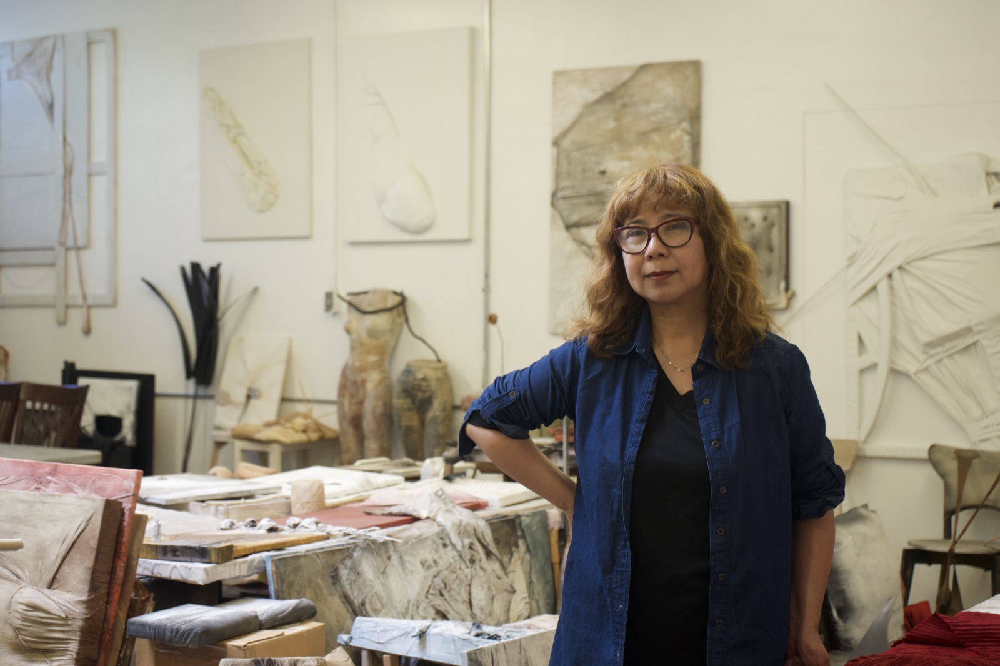
The Space & Exhibition
Clear, spacious documentation of architectural gallery layouts and direct lighting.
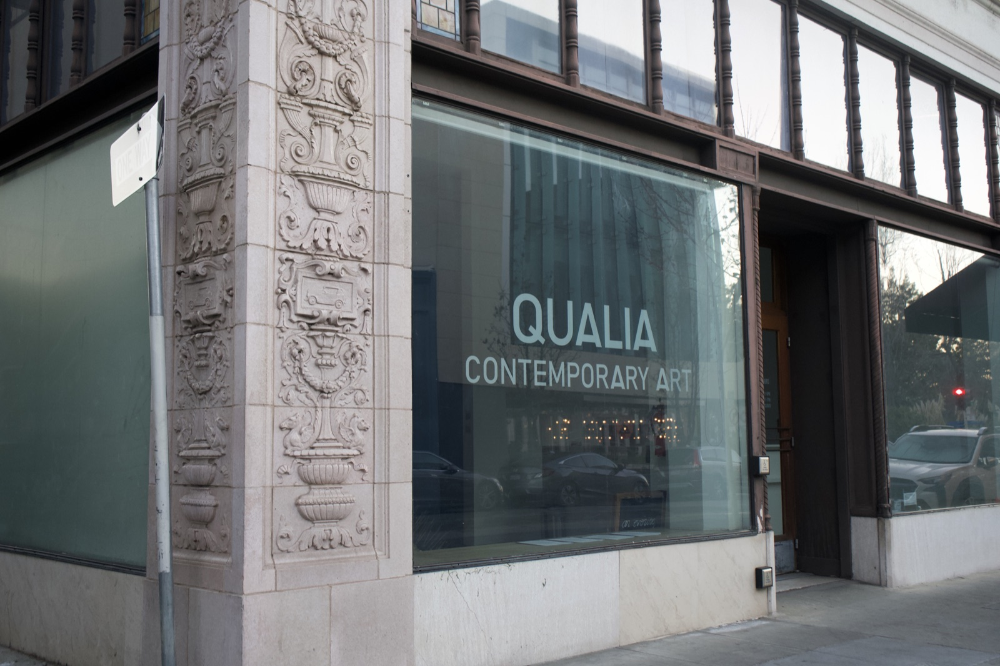
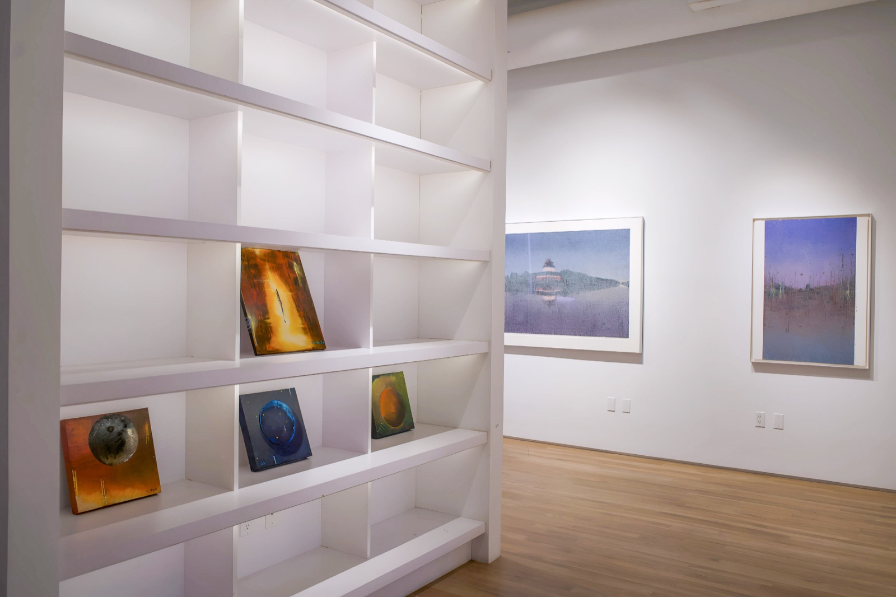
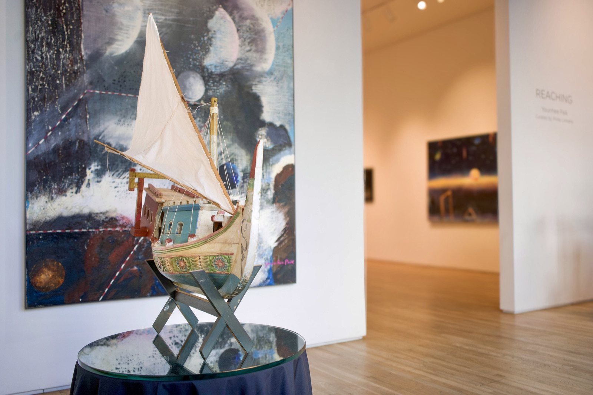
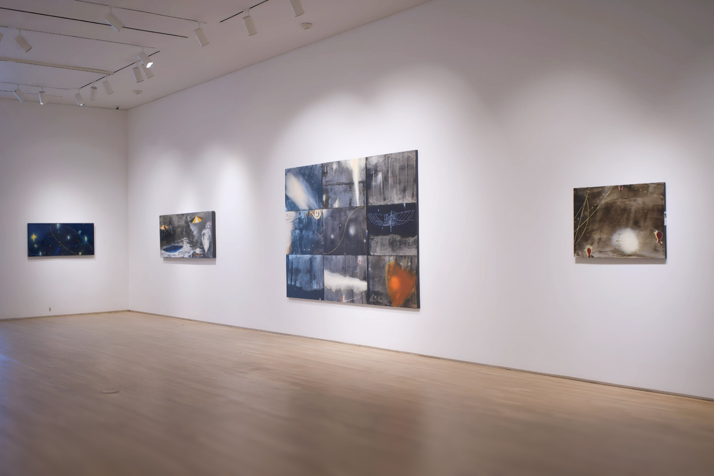
Community, Engagement, & Outreach
Documenting live multi-sensory programming and authentic human interaction within cultural spaces.
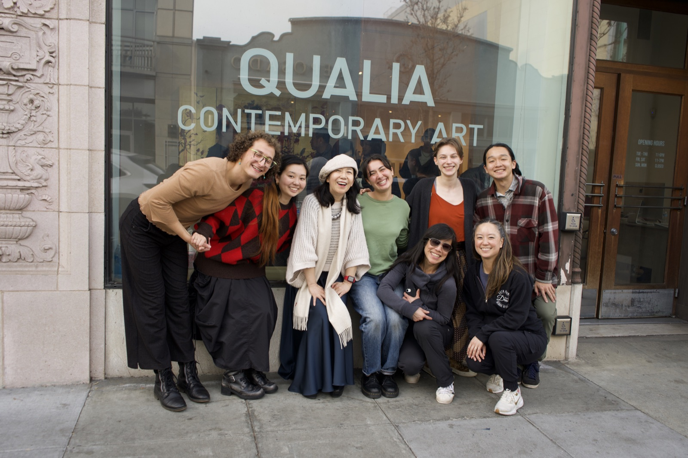
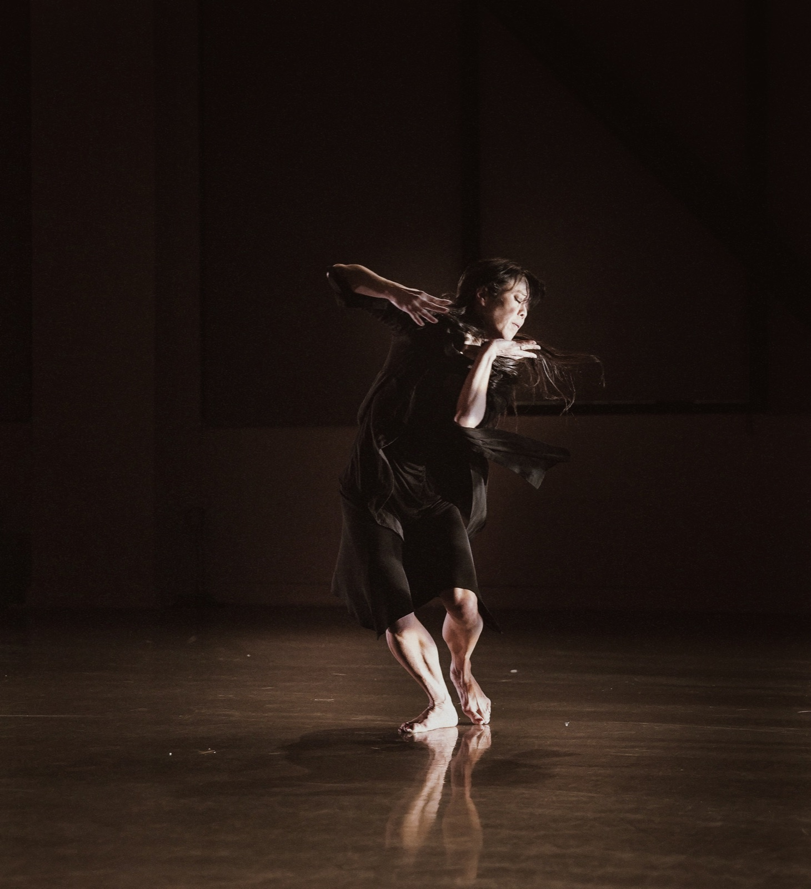
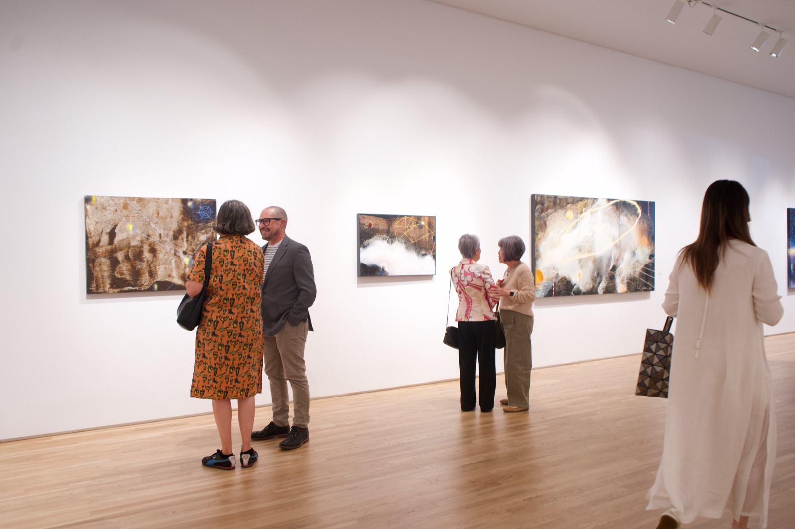
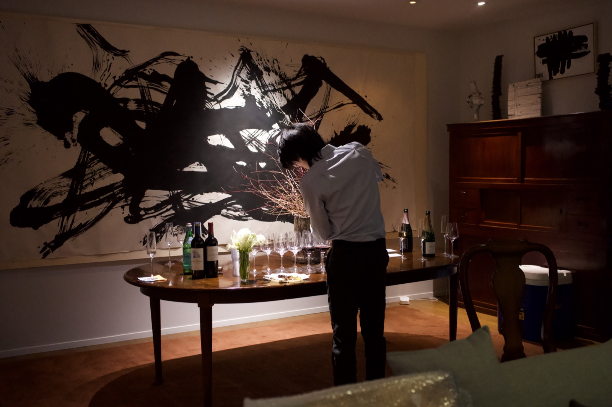
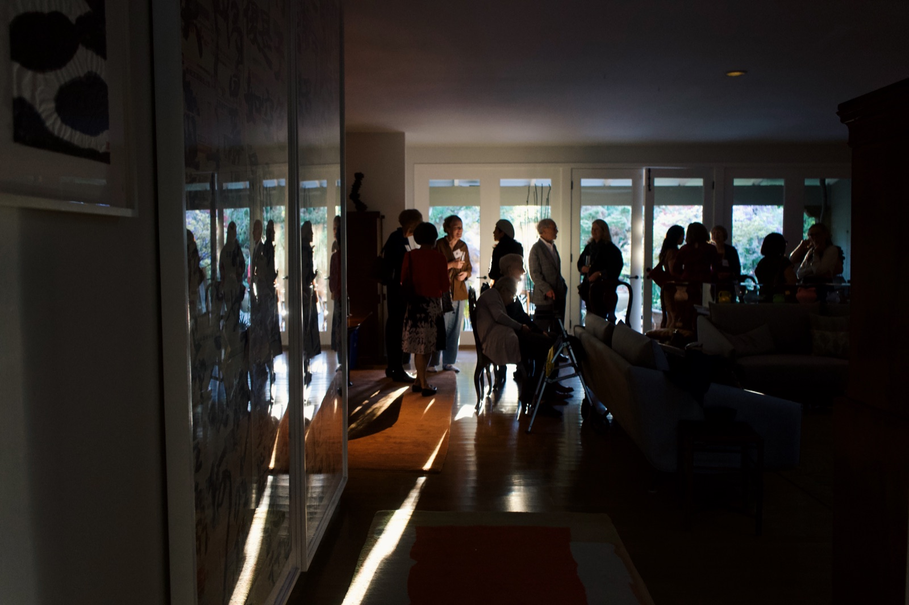
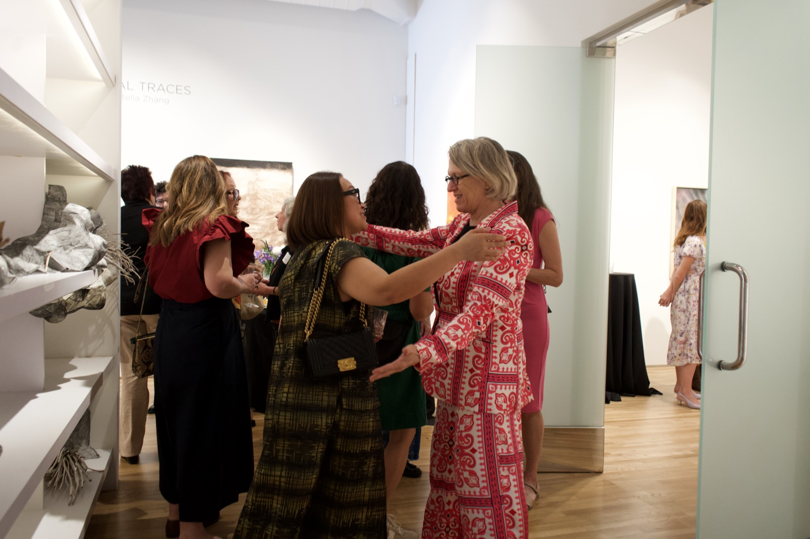
Digital Curation & Visual Outreach
Creating the visual touchpoints for exhibition campaigns. By pairing short-form film with clean typography for posters and newsletters, this media ecosystem expands audience reach and drives engagement with the gallery's collection.